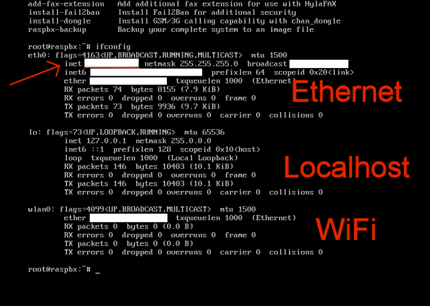

This guide will walk you through connecting to a RasPBX installation using PuTTY.
If SSH is enabled on the Raspberry Pi, it is possible to administer the Raspberry Pi from another computer. You may use PuTTY to run commands and WinSCP to transfer files between your PC and the Raspberry Pi.
You may be able to connect to the Raspberry Pi using raspbx.local but if that does not work, you will
need to find the IP Address for the Raspberry Pi. There are a few ways to find the IP Address. The most
straight forward way is to log into the Raspberry Pi and run the command "ifconfig" to obtain the IP
Address. Another method is to go to your router or DHCP server and look at the list of leases. Your
Raspberry Pi may be listed as "RASPBX". Note the IP Address and use it in PuTTY or WinSCP to connect
to the Raspberry Pi.

NOTE: It is suggested that you give your Raspberry Pi a static IP Address. There are several ways to assign a static IP Address. You may setup the Raspberry Pi to use a static IP Address or you may create a reservation on your DHCP server.
login as: root root@xxx.xxx.xxx.xxx's password: Linux raspbx 5.4.51-v7l+ #1333 SMP Mon Aug 10 16:51:40 BST 2020 armv7l Welcome to RasPBX - Asterisk for Raspberry Pi RasPBX is based on Debian. The programs included with the Debian GNU/Linux system are free software; the exact distribution terms for each program are described in the individual files in /usr/share/doc/*/copyright. RasPBX comes with ABSOLUTELY NO WARRANTY, to the extent permitted by applicable law. List of RasPBX specific commands: ----------------------------------------------------------------------------- raspbx-upgrade Keep your system up to date with the latest add-ons and security fixes configure-timezone Set timezone for both system and PHP install-fax Install HylaFAX add-fax-extension Add additional fax extension for use with HylaFAX install-fail2ban Install Fail2Ban for additional security install-dongle Install GSM/3G calling capability with chan_dongle raspbx-backup Backup your complete system to an image file Last login: Sun Dec 12 10:45:37 2021 root@raspbx:~#
You are now able to administer the Rspberry Pi remotely from another computer.